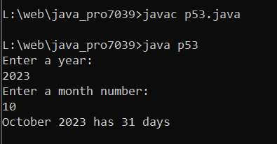

Write a Java program to find the number of days in a month.
Code:-
import java.util.Scanner;
class p53
{
public static void main(String st[])
{
Scanner s = new Scanner(System.in);
int days = 0;
System.out.println("Enter a year: ");
int year = s.nextInt();
System.out.println("Enter a month number: ");
int month = s.nextInt();
switch (month) {
case 1:
days = 31;
System.out.println("January" + " " + year + " has " + days+ " days");
break;
case 2:
if ((year % 400 == 0) || ((year % 4 == 0) && (year % 100 != 0))) {
days=29;
System.out.println("February" + " " + year + " has " + days+ " days");
} else {
days=28;
System.out.println("February" + " " + year + " has " + days+ " days");
}
break;
case 3:
days=31;
System.out.println("March" + " " + year + " has " + days+ " days");
break;
case 4:
days=30;
System.out.println("April" + " " + year + " has " + days+ " days");
break;
case 5:
days=31;
System.out.println("May" + " " + year + " has " + days+ " days");
break;
case 6:
days=30;
System.out.println("June" + " " + year + " has " + days+ " days");
break;
case 7:
days=31;
System.out.println("July" + " " + year + " has " + days+ " days");
break;
case 8:
days=31;
System.out.println("August" + " " + year + " has " + days+ " days");
break;
case 9:
days=30;
System.out.println("September" + " " + year + " has " + days+ " days");
break;
case 10:
days=31;
System.out.println("October" + " " + year + " has " + days+ " days");
break;
case 11:
days=30;
System.out.println("November" + " " + year + " has " + days+ " days");
break;
case 12:
days=31;
System.out.println("December" + " " + year + " has " + days+ " days");
default:
System.out.println("Enter valid number...");
}
}
}
Output:-

import java.util.Scanner; class p53 { public static void main(String st[]) { Scanner s = new Scanner(System.in); int days = 0; System.out.println("Enter a year: "); int year = s.nextInt(); System.out.println("Enter a month number: "); int month = s.nextInt(); switch (month) { case 1: days = 31; System.out.println("January" + " " + year + " has " + days+ " days"); break; case 2: if ((year % 400 == 0) || ((year % 4 == 0) && (year % 100 != 0))) { days=29; System.out.println("February" + " " + year + " has " + days+ " days"); } else { days=28; System.out.println("February" + " " + year + " has " + days+ " days"); } break; case 3: days=31; System.out.println("March" + " " + year + " has " + days+ " days"); break; case 4: days=30; System.out.println("April" + " " + year + " has " + days+ " days"); break; case 5: days=31; System.out.println("May" + " " + year + " has " + days+ " days"); break; case 6: days=30; System.out.println("June" + " " + year + " has " + days+ " days"); break; case 7: days=31; System.out.println("July" + " " + year + " has " + days+ " days"); break; case 8: days=31; System.out.println("August" + " " + year + " has " + days+ " days"); break; case 9: days=30; System.out.println("September" + " " + year + " has " + days+ " days"); break; case 10: days=31; System.out.println("October" + " " + year + " has " + days+ " days"); break; case 11: days=30; System.out.println("November" + " " + year + " has " + days+ " days"); break; case 12: days=31; System.out.println("December" + " " + year + " has " + days+ " days"); default: System.out.println("Enter valid number..."); } } }